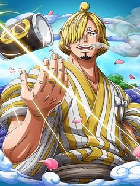
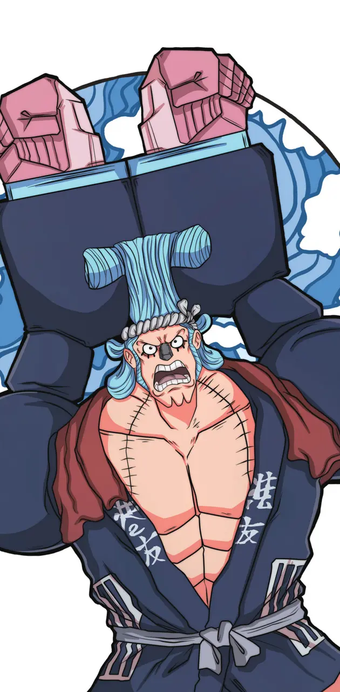

Monkey D. Luffy
Sueño del personaje:
Convertirse en el Rey de los Piratas.

Monkey D. Luffy es el intrépido capitán de los Sombrero de Paja
en busca del legendario One Piece. Con su personalidad alegre y decidida,
Luffy inspira a sus compañeros y desafía a poderosos enemigos con su elasticidad sobrehumana,
fruto de la Gomu Gomu no Mi. Su sueño de convertirse en el Rey de los Piratas lo impulsa a través
de peligrosas aventuras en el Grand Line.
Roronoa Zoro
Sueño del personaje:
Convertirse en el mejor espadachin del mundo.

Zoro es un espadachín habilidoso y leal con un fuerte sentido del honor. Su determinación
por convertirse en el mejor espadachín del mundo lo impulsa a desafiar constantemente sus límites.
Conocido por su técnica de lucha con tres espadas y su fuerza sobrehumana.
Vinsmoke Sanji
Sueño del personaje:
Encontrar el All Blue.

Sanji es un chef consumado y un experto en artes marciales, especialmente en el uso de sus piernas.
Su sueño es encontrar el All Blue, un mar legendario que contiene todos los tipos de peces del mundo.
Es conocido por su elegancia, su aprecio por la belleza y su lealtad hacia su tripulación.
Cutty Flam (Franky)
Sueño del personaje:
Crear y navegar en el barco más grande y poderoso del mundo.

Franky es un hábil ingeniero y cyborg con una personalidad extravagante. Conocido por su pasión por la
construcción de barcos y su lealtad a sus amigos, Franky es un miembro vital de los Sombrero de Paja.
Su cuerpo modificado con tecnología le otorga una fuerza impresionante y habilidades únicas en la batalla.